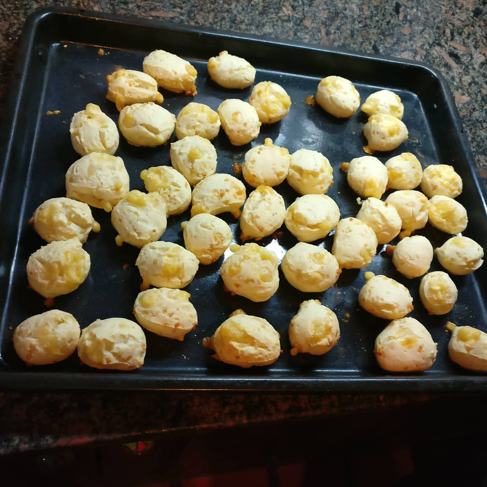

Chipa (Argentinian cheese bread)

Fun, quick and easy to make!
These delicious, Argentinean breads are small balls of cheese bread made from tapioca starch. They are quick and very
easy to make. You could even make the dough ahead of time and keep it in the freezer. If you cannot find Argentinean
cheeses, Italian cheese will do just fine.
Ingredients:
- ⅔ cup milk
- 6 ounces shredded Italian cheese blend
- 1 egg
- 3 tablespoons butter, melted
- 1¾ cups tapioca starch
- 1 cup self-rising flour
Directions
- Preheat oven to 350 degrees F (175 degrees C). Oil a baking sheet with cooking spray and set aside.
- Stir together egg, milk, cheese, and butter in a large bowl. Sprinkle in tapioca starch and flour; stir in to form a
dough. Knead dough for two minutes on a lightly floured surface, then roll into golf ball-sized pieces, and place
onto prepared baking sheet.
- Bake in preheated oven until golden brown, 10 to 15 minutes.